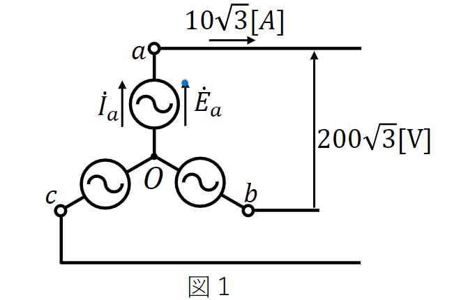
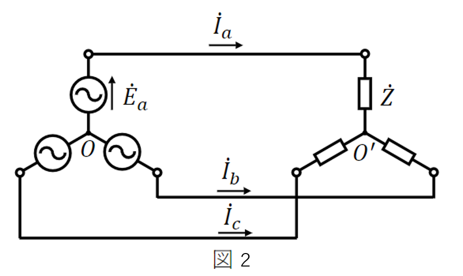
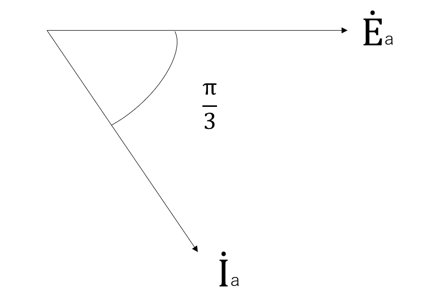
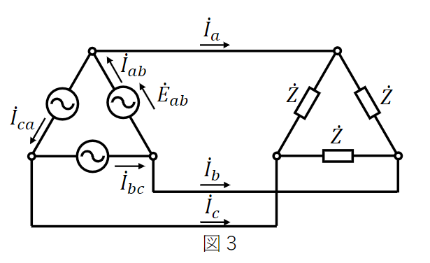
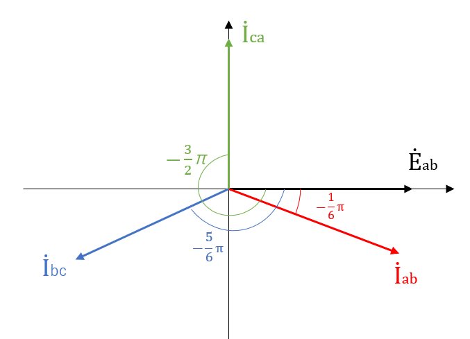
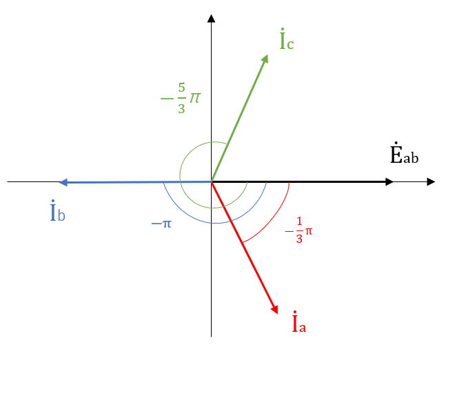

電気回路テスト対策
問１：以下の正弦波交流起電力の瞬時値が\(-60.0[V]\)となるのは正弦波交流起電力がゼロである瞬間から何秒後になるか。ただし、周波数\(f=55.0[Hz]\)とする。
\begin{align} e=120\sin{(2\pi{}ft)}[V] \end{align}
\begin{align} e=120\sin{(2\pi{}ft)}[V] \end{align}
【解答】
瞬時値が\(-60.0[V]\)になる時なので、\(e=-60.0,f=55.0\)を代入する。
\begin{align} -60&=120\sin{(110\pi{}t)} \\ -\frac{1}{2}&=\sin{(110\pi{}t)} \end{align} \(\sin{\theta{}}=-\frac{1}{2}\) となる \(\theta{}\) は、\(\theta{}=\frac{7}{6}\pi{}\) なので、 \begin{align} 110\pi{}t&=\frac{7}{6}\pi{} \\ t&=\frac{7}{6}\pi{}×\frac{1}{110\pi{}} \\ &=\frac{7}{660}=10.6[ms] \end{align}
問２：以下の正弦波交流電圧に対する電流の位相差を求めよ。
\begin{align}
&v=V_{m}\sin{\left(\omega{}t-\frac{\pi{}}{4}\right)}[V]&
&i=I_{m}\sin{\left(\omega{}t-\frac{\pi{}}{3}\right)}[A]&
\end{align}
【解答】
電圧に対する電流の位相差なので、"\(vの位相-iの位相\)"で求めることが出来る。
\begin{align} &\frac{\pi{}}{2}-\frac{\pi{}}{3}=\frac{\pi{}}{6}& &\theta{}=\frac{\pi{}}{6}& \end{align}
問３：図１のY結線された対象電源において、線間電圧の大きさが\(200\sqrt{3}[V]\)、線電流の大きさが\(100\sqrt{3}[A]\)の時の相電圧\(\dot{E}_{a}\)と相電流\(\dot{I}_{a}\)の大きさを求めよ。

【解答】
Y結線では、
\begin{align}
線間電圧&=\sqrt{3}\angle\frac{\pi}{6}×線電圧
\\
線電流&=相電流
\end{align}
の関係が成り立つので、この公式に当てはめて解いていくと線間電圧は、
\begin{align}
200\sqrt{3}&=\sqrt{3}×|\dot{E}_{a}|
\\
|\dot{E}_{a}|&=200\sqrt{3}×\frac{1}{\sqrt{3}}=200[V]
\end{align}
相電流は、
\begin{align}
|\dot{I}_{a}|=100\sqrt{3}[A]
\end{align}
問４：次の図２の平衡三相回路(Y-Y回路)について以下の設問に答えよ。
(2) 相電圧と線電流の位相差\(\theta{}\)を求めよ。
(3) 相電圧\(\dot{E}_{a}\)を基準としたときの線電流\(\dot{I}_{a},\dot{I}_{b},\dot{I}_{c}\)を求めよ。ただし、極座標形式で表すこと。

(1) 相電圧\(\dot{E}_{a}\)の大きさが\(100[V]\)、インピーダンスが\(\dot{Z}=10+j10\sqrt{3}[\Omega{}]\)のとき、線電流\(\dot{I}_{a}\)の大きさを求めよ。
(2) 相電圧と線電流の位相差\(\theta{}\)を求めよ。
(3) 相電圧\(\dot{E}_{a}\)を基準としたときの線電流\(\dot{I}_{a},\dot{I}_{b},\dot{I}_{c}\)を求めよ。ただし、極座標形式で表すこと。
【解答】
(1) オームの法則より、\(\dot{I}=\frac{\dot{E}}{\dot{Z}}\)に代入して、 \begin{align} \dot{I}_{a}=\frac{100}{10+j10\sqrt{3}}&=\frac{100}{10+j10\sqrt{3}}×\frac{10-j10\sqrt{3}}{10-j10\sqrt{3}} \\ \\ &=2.5-j4.33[A] \end{align} 電流の大きさは、
\begin{align}
\dot{I}=a+jb[A]のとき、|\dot{I}|=\sqrt{a^{2}+b^{2}}
\end{align}
で表されるので、
\begin{align}
|\dot{I}_{a}|=\sqrt{2.5^{2}+(-4.33)^{2}}\fallingdotseq5[A]
\end{align}
(2)相電圧と線電流の位相差は、
\begin{align}
\dot{Z}=a+jb[\Omega]のとき、\theta=\tan^{-1}\frac{b}{a}
\end{align}
で表されるので、
\begin{align}
\theta=\tan^{-1}\frac{10\sqrt{3}}{10}=\frac{\pi}{3}[rad]
\end{align}
また、ベクトル図は以下のようになる。

(3)直交座標から極座標への変換公式は、
\begin{align}
直交座標(a,b)のとき、極座標は、\sqrt{a^{2}+b^{2}}\angle\tan^{-1}\frac{b}{a}
\end{align}
で表せる。
\(\dot{I}_{a}=2.5-j4.33\) より、直交座標は \((2.5,-4.33)\) と表されるので、極座標に変換すると、 \begin{align} \dot{I}_{a}=\sqrt{2.5^2+(-4.33)^{2}}\angle\tan^{-1}\frac{-4.33}{2.5}=5\angle-\frac{\pi}{3} \end{align}
問５：次の図３の平衡三相回路（Δ-Δ回路）について以下の問題に答えよ。
(2)相電圧\(\dot{E}_{ab}\)を基準としたときの線電流\(\dot{I}_{a},\dot{I}_{b},\dot{I}_{c}\)を求めよ。

(1)相電圧\(\dot{E}_{ab}\)の大きさを\(120[V]\)、インピーダンスを\(\dot{Z}=20\sqrt{3}+j20[\Omega]\)として、相電圧\(\dot{E}_{ab}\)を基準としたときの、
相電流\(\dot{I}_{ab},\dot{I}_{bc},\dot{I}_{ca}\)を求めよ。ただし、極座標形式で表すこと。
(2)相電圧\(\dot{E}_{ab}\)を基準としたときの線電流\(\dot{I}_{a},\dot{I}_{b},\dot{I}_{c}\)を求めよ。
【解答】
(1)\(\dot{I}_{ab}=\frac{\dot{E}_{ab}}{\dot{Z}}\)より、それぞれの値を代入して、 \begin{align} \dot{I}_{ab}=\frac{120}{20\sqrt{3}+j20}=2.6-j1.5[A] \end{align} 極座標変換すると、 \begin{align} |\dot{I}_{ab}|&=\sqrt{2.6^{2}+(-1.5)^{2}}=3[A] \\ \\ \theta&=\tan^{-1}{\frac{-1.5}{2.6}}=-\frac{\pi}{6}[rad] \end{align} より、 \begin{align} \dot{I}_{ab}=3\angle-\frac{\pi}{6}[A] \end{align} また、\(\dot{I}_{bc},\dot{I}_{ca}\)は、それぞれ\(\frac{2\pi}{3}\)ずつ位相をずらせば良いので、 \begin{align} \dot{I}_{bc}=3\angle-\frac{5\pi}{6}[A] \\ \dot{I}_{ca}=3\angle-\frac{3\pi}{2}[A] \end{align} また、ベクトル図は以下のようになる。

(2)Δ結線では、
\begin{align}
線電流&=\sqrt{3}\angle-\frac{\pi}{6}×相電流
\\
線間電圧&=相電圧
\end{align}
の関係が成り立つので、
\begin{align}
\dot{I}_{a}=\sqrt{3}\angle-\frac{\pi}{6}×\dot{I}_{ab}&=\sqrt{3}\angle-\frac{\pi}{6}×3\angle-\frac{\pi}{6}
\\
&=3\sqrt{3}\angle-\frac{\pi}{3}[A]
\end{align}
\(\dot{I}_{b},\dot{I}_{c}\)も同様に、
\begin{align}
\dot{I}_{b}&=3\sqrt{3}\angle-\pi[A]
\\
\dot{I}_{c}&=3\sqrt{3}\angle-\frac{5\pi}{3}[A]
\end{align}
また、ベクトル図は以下のようになる。
